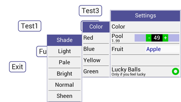
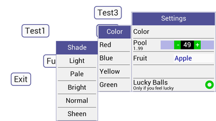
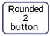
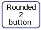
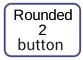

The full change.log.txt is here
Oct 2017
All Upgraded
Numerous fixes and tweaks.
Button.bas v5.0
PickForm.bas v3.0
PickList v3.0
TxtScroll.bas v4.5
Text.bas v3.4
Themes.bas v5.5 (now mandatory)
Init.bas v5.1 (uses themes )
Event.bas v5.1
Work was done to include widget borders in their metrics for accurate positioning and near pixel precise using integer values.
More widgets are in harmony with each other's look and feel with better touch feedback and response.
The new code is available below as usual and also used in the new app "Basic Stocks" which was posted in the rfo-basic forum. It also features custom code for a chart widget, display functions for bringing widgets "to-front" and the first use of widget de-contructors to save memory. Download the apk and rename it to .zip for the source.
Button.bas v5.0
PickForm.bas v3.0
PickList v3.0
TxtScroll.bas v4.5
Text.bas v3.4
Themes.bas v5.5 (now mandatory)
Init.bas v5.1 (uses themes )
Event.bas v5.1
Work was done to include widget borders in their metrics for accurate positioning and near pixel precise using integer values.
More widgets are in harmony with each other's look and feel with better touch feedback and response.
The new code is available below as usual and also used in the new app "Basic Stocks" which was posted in the rfo-basic forum. It also features custom code for a chart widget, display functions for bringing widgets "to-front" and the first use of widget de-contructors to save memory. Download the apk and rename it to .zip for the source.
Sep 2016
PickForm.bas v1.9 and pfdemo v5.1
upgraded.
Jul 2016
Apr 2016
TxtScroll.bas v4.1
Improved swiping.
Snap is now make-option (S) and to nearest row.
raw mode no longer a toggle but a make-option (W).
Colors removed from center and right align.
Colors (2 & 3) added to lines formatting.
Reverse color (V) added to lines formatting.
fix goto non-existent line#
gr.render only for a move or roll
With careful manipulation of the embedded text command Reverse color (V),
a primitive modeless selection list can be implemented. An example is found in the new
txtscroll_demo
button.bas v4.6
Workaround for if..then..sw.break bug for Basic v1.90
Snap is now make-option (S) and to nearest row.
raw mode no longer a toggle but a make-option (W).
Colors removed from center and right align.
Colors (2 & 3) added to lines formatting.
Reverse color (V) added to lines formatting.
fix goto non-existent line#
gr.render only for a move or roll
With careful manipulation of the embedded text command Reverse color (V),
a primitive modeless selection list can be implemented. An example is found in the new
txtscroll_demo
button.bas v4.6
Workaround for if..then..sw.break bug for Basic v1.90
Nov 2015
Major Changes !
ISR.BAS now a
function
bundle(1) global vars Name Changes (see init.bas v5.0)
THEMES.BAS (v5.0)
Themes support for formfill.bas has been dropped.
The new pickform.bas is the preferred widget for forms.
All demos have been upgraded.
So it must be declared at the start of your program
instead of at the end.
Also, the functions isr_set("foo") and bk_pressed() have been moved from event.bas to isr.bas
ISR.BAS (v5.0) is now mandatory.
Also, the functions isr_set("foo") and bk_pressed() have been moved from event.bas to isr.bas
ISR.BAS (v5.0) is now mandatory.
bundle(1) global vars Name Changes (see init.bas v5.0)
"tx_height" renamed to "txt_h"
"row_height" renamed to "row_h"
"row_height" renamed to "row_h"
THEMES.BAS (v5.0)
Themes support for formfill.bas has been dropped.
The new pickform.bas is the preferred widget for forms.
All demos have been upgraded.
September 2015
Most of Hew code has had spaces compressed to tabs.
button.bas v4.5 - nasty bugfix for 'move' since v4.4
button.bas v4.5 - nasty bugfix for 'move' since v4.4
August 2015
text.bas v2.1 -
bug fix widget type
is now "text".
console.bas v4.1 - bug fix 'clear','tag' on empty list
console.bas v4.1 - bug fix 'clear','tag' on empty list
July 2015
themes.bas v2.3 -
bug fix for
use_themes.
txtscroll.bas v3.1 - rounded corners option, removed snap and improved scrolling. demo updated.
init.bas v3.1 - mandatory support for shell event detection
event.bas v1.6 - added shell event detection
txtscroll.bas v3.1 - rounded corners option, removed snap and improved scrolling. demo updated.
init.bas v3.1 - mandatory support for shell event detection
event.bas v1.6 - added shell event detection
event_shell(1) = turn on shell event detection. (i.e
system.read.ready)
event_shell(0) = turn off shell event detection.
event_get () will return -1 if shell event is detected.
event_shell(0) = turn off shell event detection.
event_get () will return -1 if shell event is detected.
console.bas - v4.1 added "bak" cmd = backspace
numpad.bas v2.0 - no longer needs numpad_make() and txtobj support has been removed.
button.bas v4.3 - experimental override width/height and optimisations.
pickform.bas v1.3 - bug fixes
June 2015
*** News -- HeadsUp
! *** Major Changes !
gformfill => pickform
gselect => picklist
gnumpad => numpad
pickform 3rd gen
init.bas v3.0
gformfill => pickform
gselect => picklist
gnumpad => numpad
"gformfill" is now renamed to "pickform" !
"gselect" is now renamed to "picklist" !
"gnumpad" is now renamed to "numpad" !
picklist behaves the same except that commas will be used to seperate list items instead of '|'.
In addition, you will be able to place it at any x,y position for any transistion.
"gselect" is now renamed to "picklist" !
"gnumpad" is now renamed to "numpad" !
picklist behaves the same except that commas will be used to seperate list items instead of '|'.
In addition, you will be able to place it at any x,y position for any transistion.
pickform 3rd gen
pickform replaces
gformfill was re-written to cater only for
short
lists (2 screensful max) similar to picklist.
It uses only 1 bitmap.
This means you will not be able to use it for very long lists (use formfill if you have long lists).
The upside is that it will be a lot smoother. And it will be able to call embedded forms and other widgets to do some of it's work.
e.g you will be able to create forms with subforms to simulate multi-level drop down lists.
The new version restarts as pickform v1.00.
(demo)
This means you will not be able to use it for very long lists (use formfill if you have long lists).
The upside is that it will be a lot smoother. And it will be able to call embedded forms and other widgets to do some of it's work.
e.g you will be able to create forms with subforms to simulate multi-level drop down lists.
The new version restarts as pickform v1.00.
(demo)
init.bas v3.0
init was simplified internally to calculate
tx_height, row_height and srows, depending wether you
use scaling (or not). srows and row_height are no
longer rounded down. This means more consistent font
sizes when switching between portrait /
landscape.
May 2015
*** Notice - - HEW requires Basic 1.87+ . *** this is now the minimum requirement.
Basic!1.87 has a host of new features and
bug fixes.
*** Notice - - INIT.BAS - is now a function init_hew().
This means that init.bas can be included anywhere before the first piece of code in your main program,
It also means you need to bundle.get 'global' (1) hew values before you use them.
e.g
include themes.bas
% widget colors
include event.bas % event loop
include init.bas % init screen and globals
%--------------------
init_hew()
bundle.get 1, "scr_w", scr_w
bundle.get 1, "scr_h", scr_h
bundle.get 1, "row_height", row_h
bundle.get 1, "tx_height", tx_height
bundle.get 1, "widgets", widgets
include event.bas % event loop
include init.bas % init screen and globals
%--------------------
init_hew()
bundle.get 1, "scr_w", scr_w
bundle.get 1, "scr_h", scr_h
bundle.get 1, "row_height", row_h
bundle.get 1, "tx_height", tx_height
bundle.get 1, "widgets", widgets
Apr 2015
textin.bas was replaced
with textbox.bas
v4.0 console.bas - the "console" commands have been shortened to "con"
It is essentially the same except it can also
be used for general output.
v4.0 console.bas - the "console" commands have been shortened to "con"
i.e
call console_make ("", bsize, x,y,ww,wh) --> call con_make ("", bsize, x,y,ww,wh)
call console ("print", "hello",wg) --> call con ("print","hello",wg)
call console_bulk (a_list, wg) --> call con_bulk (a_list, wg)
call console_make ("", bsize, x,y,ww,wh) --> call con_make ("", bsize, x,y,ww,wh)
call console ("print", "hello",wg) --> call con ("print","hello",wg)
call console_bulk (a_list, wg) --> call con_bulk (a_list, wg)
Mar 2015
*** Major change !
*** Notice - HeadsUp! - NAME$ has been phased out ! -- widgets no longer have names.
Name$less model
I have phased out name$ from all widgets. So use the bundle ID to identify widgets instead. (button.bas and other widgets that need it has name$ changed to 'aux$' instead to hold other data.
There is also an added "type" to the bundle of detectable widgets for easier identification.
All demos have been updated. Old programs are not likely to work, so you'll have to redownload the
whole framework.
Apologies for this big change, It WILL affect all programs that use name$, it will affect all demos. But
demos in their own zip packages will still work because zip packages carry all the old files needed.
*** Notice - HeadsUp! - NAME$ has been phased out ! -- widgets no longer have names.
Name$less model
I have phased out name$ from all widgets. So use the bundle ID to identify widgets instead. (button.bas and other widgets that need it has name$ changed to 'aux$' instead to hold other data.
There is also an added "type" to the bundle of detectable widgets for easier identification.
All demos have been updated. Old programs are not likely to work, so you'll have to redownload the
whole framework.
Apologies for this big change, It WILL affect all programs that use name$, it will affect all demos. But
demos in their own zip packages will still work because zip packages carry all the old files needed.
Dec 2014
terminal_demo.zip - Demo for keyinp and
console.
keyinp.bas - Push-Out keyboard input widget - with input at top so as not to obstruct the view.
keyinp.bas - Push-Out keyboard input widget - with input at top so as not to obstruct the view.
Nov 2014
Upgrade -
to BASIC 1.84+ and Themes
Button.bas
* Important ! HEW now requires BASIC 1.84 as
minimum version.
It uses some new commands not found in earlier versions of BASIC, most notably gr.text.height for optimum accuracy.
* Important ! HEW now requires themes.bas
themes.bas carries the default colors for all widgets.
Color changing will be in one place and easier to modify.
All demos and widgets have been upgraded with themes.bas
It uses some new commands not found in earlier versions of BASIC, most notably gr.text.height for optimum accuracy.
* Important ! HEW now requires themes.bas
themes.bas carries the default colors for all widgets.
Color changing will be in one place and easier to modify.
All demos and widgets have been upgraded with themes.bas
Button.bas
Oct 2014
Button.bas
Sep 2014
Now supports multi-line text.
(dependent widgets also updated). 

Added multiple flash e.g call button ("flash", "3", wg)
Changed Style 4 to type "Rounded-2" (previously bracketed).
Changed Style type no-border to type '0' (previously type '5').
Centered muti-line text vertically. Blank lines at start can add vertical height.
BackKey detectionAdded multiple flash e.g call button ("flash", "3", wg)
Changed Style 4 to type "Rounded-2" (previously bracketed).
Changed Style type no-border to type '0' (previously type '5').
Centered muti-line text vertically. Blank lines at start can add vertical height.
Init, Event, ISR and all widgets detecting
for backkey have been modfied for the new
detection model.
(see here)
Launch(see here)
HEW is stable enough for launch.
All widgets are now officially starting from
v1.0.
Msg_OK.bas and
Ask_YN.bas
Two new dialog widgets.
These modal dialogs use button.bas for their buttons. (button.bas must be included with your project).
They manlpulate the global bundle variable 'widgets' and borrow event.bas's event loop.
(and they must be created last of all in order to appear on top). dialog_demo.
event.basThese modal dialogs use button.bas for their buttons. (button.bas must be included with your project).
They manlpulate the global bundle variable 'widgets' and borrow event.bas's event loop.
(and they must be created last of all in order to appear on top). dialog_demo.
get_event (widgets) is now renamed and
replaced with event_get().
event_get() uses the global bundle variable 'widgets'. This variable may be manipulated by other widgets that use event.bas. All demos re-packaged.
text.basevent_get() uses the global bundle variable 'widgets'. This variable may be manipulated by other widgets that use event.bas. All demos re-packaged.
textdo has been renamed to text_do for
consistency.
txtscroll.bas
v1.0
Aug 2014
Smoothly scrolls textlines
vertically.
init.bas
now scales to smallest act/dev ratio (w|h),
whichever is smallest. (everything will now fit
inside the screen).
gformfill v.2
Jul 2014
joins HEW as a reusable widget. Code looks
heavy and bloated but it works. It is still
non-scrollable and for landscape, it is really only
just usable for 10 rows otherwise the text is too
small for most phones (should be ok for tablets
though).
gformfill has a new type called 'counter' which is a number spinner.
gformfill has a new type called 'counter' which is a number spinner.
event.bas
was converted into a function. Any code
can now call
get_event ( event_get() - oct-2014),
the
widget list must be passed, (widget list is
now global -oct 2014) any touched widget is returned
or 0 if bakkey.
Forum
The rfo-basic forum is hosted on freeforums.org.
Acknowledgments
Paul Laughton - RFO Basic (named after "The Dr. Richard Feynman Observatory").
Nicolas Mougin - RFO-basic Launcher and App-Builder
stefano - XAB x-apk-builder
Nick Antonaccio - Learn RFO Basic tutorials